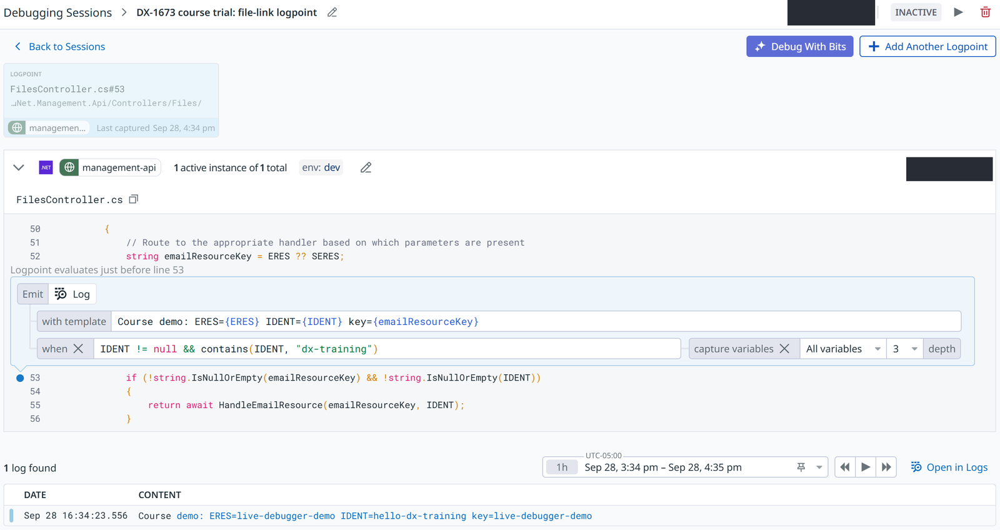

Troubleshooting with Datadog 101

What You'll Leave With
Find and understand a trace
Traces, spans and the gap
Why is it slow?
Profiles: Wall vs CPU, flame graphs
Find the cause of an error
Exception Replay and Live Debugger
Investigate with Claude
In every part, then check its work
Three Words: Service, Span, Trace

Finding Your Way Around APM
Demo: A Slow Request, End to End
- Open Datadog → APM → search resident-api Open Datadog ↗
- Service page: set env to prod, check the operation
- Endpoints: search
/api/user/dashboard, then Traces → Trace Explorer - Historical vs Live Search, then add
@duration:>8sTraces search ↗ - Open a slow one: Flame Graph → Waterfall → Span List
- Find the gap
- Click the resident-api span: look at each tab, stop at Profiles
What We Just Saw: The Gap Is Our Code

Tracing records the calls out of our code. When our own code is busy, tracing has no data for that time.
What Claude Can Do With the Datadog MCP
Some of what Claude can query with the Datadog MCP
Demo: Claude Helps Analyze the Slow Request
- Paste the prompt below into Claude Code
- From the D1 tab, copy the trace link and paste it after the prompt
- Compare its numbers with what we found by hand
[paste the trace link]
Why Is It Slow?
Tracing vs Profiling
Demo: From the Trace to the Profile
- Back to the D1 trace: click the resident-api span → Profiles
- Thread timeline: idle during SQL, busy in the gap
- Flame Graph tab: gray is framework, blue is our code
- Read down to
GetEnumFromDescription - APM → Profiles: every dashboard request, on CPU Time All requests ↗
- Filter flame graph: focus on
GetUserDashboardItems
What We Just Saw: A Slow Lookup, Many Times
Demo: Claude Reads the Profile and the Code
- Paste the prompt below into Claude Code
- From the D1 tab, copy the trace link and paste it after the prompt
- Compare with what we found: the method, why it's slow, the fix
[paste the trace link]
Finding the Cause of an Error
Exception Replay: The Values Behind an Error
At most 1 snapshot per exception type, per server, per hour (G13) · not every exception gets one (G14)
Demo: An Error From Our Email Links
- Errors → Error Tracking: management-api FormatException Error Tracking ↗
- Set Past 1 Week, open the issue in
System.Convert.FromBase64_Decode - Error sample → Stack Trace: the snapshot under
Decrypt - Expand
cipherString: redacted
Live Debugger: A Log Line Without a Deploy
Set up in dev today (G15) · prod would need Targeted redaction (G16)
Demo: Add a Logpoint in Dev
- APM → Debugger → New Session → Start debugging manually Live Debugger ↗
- management-api, dev · search FilesController → click line 53
- Template, + Condition → Start Debug Session
- Send the test request Test request ↗
- Open the capture, then stop the session Backup
Demo: Claude Explains the Error
- Paste the prompt below into Claude Code
- From the D5 tab, copy the issue link and paste it after the prompt
- Compare with what we found, then look at the fix
[paste the issue link]
Trust, but Check
Three Checking Habits
"Is This Real?"
Median flat · one window · every host · back to baseline → app pools warming up, not a regression
Which Tool for Which Question
Why is it slow?
Trace, then profile
Parts 1 and 2
What caused this error?
Exception Replay
Error Tracking → issue → Stack Trace
What is this value, at this line?
Live Debugger
in dev, for now
Claude can do all three · check its work (C1–C3) · if a debugging feature doesn't work, check G13–G22
Your Turn
Keep the cheat sheet
Every prompt and click path, one page
Post one finding
Your own service, in the #ai‑exchange thread, within two weeks
Turn it into a ticket
The sdlc plugin creates it and starts the work
Backup: What a Logpoint Captures

management-api in dev · the logpoint on line 53 and one capture Back to D7